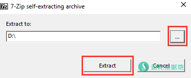
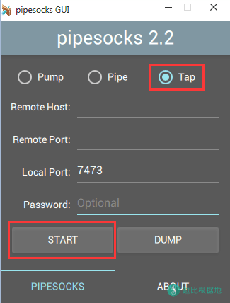
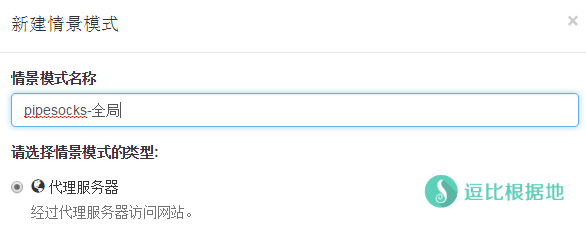
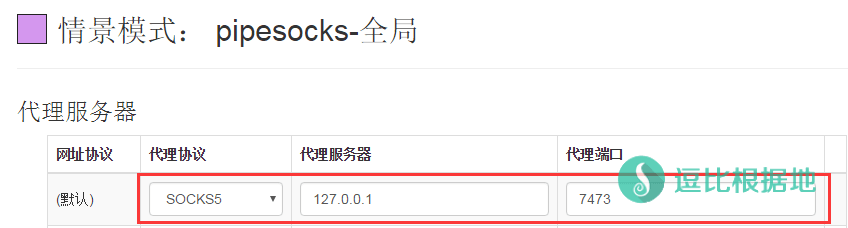
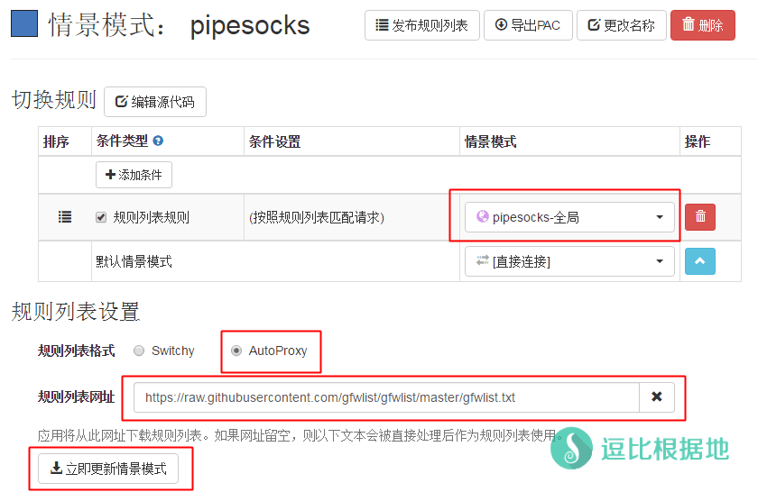

最近发现了这个新的代理软件 PipeSocks，试了试不错，就写个简单教程介绍一下。
本片文章包含了 Windows客户端使用教程 及 Linux 服务端安装教程。
Linux服务端一键脚本：『原创』CentOS/Debian/Ubuntu PipeSocks服务端 一键安装脚本
目前 PipeSocks 已经停止维护很长时间了，如非必须，不推荐使用！
简单介绍
不要看这个软件版本已经 2.x 了，实际上也是最近才正式开始开发的，属于Socks5协议代理软件。
把整个科学上网的过程比喻成 Pump(泵)、Pipe(水管)、Tap(水龙头)。
泵安装在海外服务器上面(即 服务端)，水龙头安装在本地设备上(即 客户端)，而水管则是在必要的时候起到加速/匿名等作用。
PipeScosk实际上各个平台的软件，都是三合一(Pump/Pipe/Tap)，既可以客户端也可以服务端。
本教程只介绍 Linux服务端和 Windows客户端 的使用方法。
官方网站：https://pipesocks.github.io/
Github项目：https://github.com/pipesocks/pipesocks
Telegram群组：https://t.me/pipesocks
注意：本软件还处于开发初期，可能会存在诸多BUG，如遇到BUG，请携带 服务端日志+客户端日志+情况描述 前往Github - issue反馈，或者进入Telegram群组反馈。
Pump 服务端使用方法
首先你有一台海外服务器，登陆进去后在任意一个目录( /tmp 目录不行)，比如 /root 目录。
系统位数：
因为PipeSocks Linux只有 64位，所以需要 64位的系统才能使用，请先检查你的系统位数。
uname -m
如果返回的是 x86_64 那么就可以继续下面的安装步骤了，如果是其他的，那么就请更换系统。
下载服务端：
下载、解压PipeSocks，以下安装代码会 自动检测并下载、解压 最新版本，如果不是最新的请去这里查看最新版本。
Ver=$(wget -qO- https://github.com/pipesocks/pipesocks/releases/latest | grep "<title>" | sed -r 's/.*pipesocks (.+) · pipesocks.*/\1/') && mkdir pipesocks && cd pipesocks && wget "https://github.com/pipesocks/pipesocks/releases/download/${Ver}/pipesocks-${Ver}-linux.tar.xz" && tar -xJf pipesocks-${Ver}-linux.tar.xz && rm -rf pipesocks-${Ver}-linux.tar.xz
运行服务端
注意：以下控制代码，必须进入pipesocks目录后才可以执行（cd pipesocks）！
不带日志运行：
nohup ./pipesocks pump -p 端口 -k 密码 &
带日志运行：
nohup ./pipesocks pump -p 端口 -k 密码 &>pipesocks.log &
停止运行：
kill -9 $(ps -ef|grep "pipesocks"|grep -v "grep"|awk '{print $2}'|sed -n "2p")
查看日志(假设是 带日志运行，需要进入安装目录执行 )：
tail -f pipesocks.log
如果没有出现什么错误提示，那么就正常运行了。
设置开放防火墙端口：
iptables -I INPUT -m state --state NEW -m tcp -p tcp --dport 端口 -j ACCEPT iptables -I INPUT -m state --state NEW -m udp -p udp --dport 端口 -j ACCEPT # 如果要删除添加的这两个防火墙端口就把 -I 改成 -D 就好了，比如： iptables -D INPUT -m state --state NEW -m tcp -p tcp --dport 端口 -j ACCEPT iptables -D INPUT -m state --state NEW -m udp -p udp --dport 端口 -j ACCEPT
升级服务端
如果你需要升级服务端，那么只需要重复上面一开始的下载、解压安装步骤即可。
其他说明
提示 wget: command not found 的错误
这是你的系统精简的太干净了，wget都没有安装，所以需要安装wget。
# CentOS系统: yum install -y wget # Debian/Ubuntu系统: apt-get install -y wget
启动PipeSocks提示失败
启动失败请查看日志，如果看到这个提示：
Failed to bind to port 端口, exiting. . .
那么说明是因为端口被占用导致的无法绑定端口从而无法启动。
用这个命令 netstat -lntp 查看一下那个程序占用了端口并结束它，或者更换PipeSocks账号端口也行。
Tap 客户端使用方法
下载客户端
下载客户端后，是一个 7-Zip 的自解压文件，打开下载后的 pipesocks-x.x-win.exe 文件，然后如下图选择要解压的目录，然后点击 Extract 按钮解压。

解压后，进入解压的 pipesocks文件夹，找到 pipesocks.exe 文件并双击打开，就会看到如下图的界面。
如果你打开客户端报错，那么可能是缺少支持库，这时候在文件夹内找到 vc_redist.x86.exe 文件，双击安装支持库后即可。
我们是做客户端的，所以选择 Tap(默认) 即可。
下面的几个选项分别是：服务器 IP、服务器 端口、本地监听端口、服务器 密码
根据我们上面搭建的服务端配置来分别填写这几个选项，填写完后，点击 START 按钮链接服务器。
另一个 DUMP 按钮是用来输出日志的，点一下会让你生成一个 xxx.log 文件，然后就会自动把 客户端输出的日志信息 写入日志文件中。
这时候，你还不能直接科学上网，你要需要设置浏览器代理。

设置浏览器代理
这里建议使用 Proxy SwitchyOmega扩展（下载：Chrome 应用商店(需要翻)、逗比云） 来管理代理。
安装扩展后，打开扩展的选项页面，然后新建情景模式，分别添加一个全局和PAC的情景模式。
全局 情景模式：
新建情景模式，名称随意，类型选择 代理服务器
然后设置代理协议为 SOCKS5 ，代理服务器为 127.0.0.1 ，代理端口为 7473
然后点击页面左下角的 应用选项 即可。
自动切换(PAC)情景模式：
新建情景模式，名称随意，类型选择 自动切换模式
然后在规则列表设置中 规则列表格式选择 AutoProxy，
规则列表网址为 https://raw.githubusercontent.com/gfwlist/gfwlist/master/gfwlist.txt
同时切换规则中，按照规则列表匹配请求的情景模式选择上面设置过的 pipesocks-全局 情景模式。
然后点击 立即更新情景模式 按钮，然后点击页面左下角的 应用选项 即可。
这时候在浏览器右上角，点击这个扩展的按钮(圆圈)，根据需求选择 PAC或全局，然后打开谷歌：www.google.com 测试一下吧！
注意：本软件还处于开发初期，可能会存在诸多BUG，如遇到BUG，请携带 服务端日志+客户端日志+情况描述 前往Github - issue反馈，或者进入Telegram群组反馈。




参考资料：https://pipesocks.github.io/md/tutorial
转载请超链接注明：逗比根据地 » 「让科学上网成为一种艺术」一个新的Socks5代理软件 —— PipeSocks
责任声明：本站一切资源仅用作交流学习，请勿用作商业或违法行为！如造成任何后果，本站概不负责！